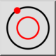
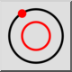
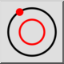
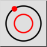

Koncentriskt (genom punkt)
Verktygsfält / ikon:
 

Meny: Rita > Cirkel > Koncentriskt (genom punkt)
Genväg: C, G
Kommandon: circleconcentricthrough | cg
Detta är en automatisk översättning.
Verktygsfält / ikon:
 

Meny: Rita > Cirkel > Koncentriskt (genom punkt)
Genväg: C, G
Kommandon: circleconcentricthrough | cg
Med det här verktyget kan du skapa koncentriska cirklar som går genom en bestämd punkt.